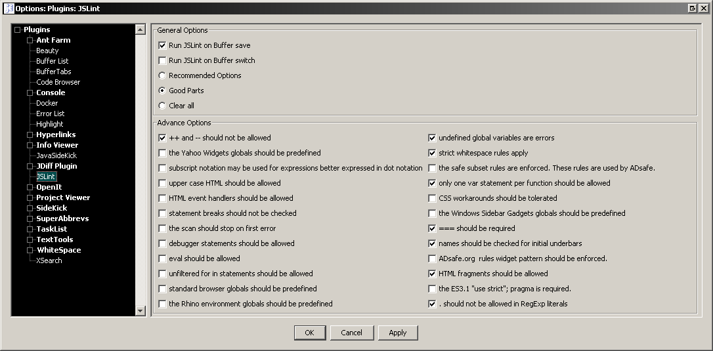
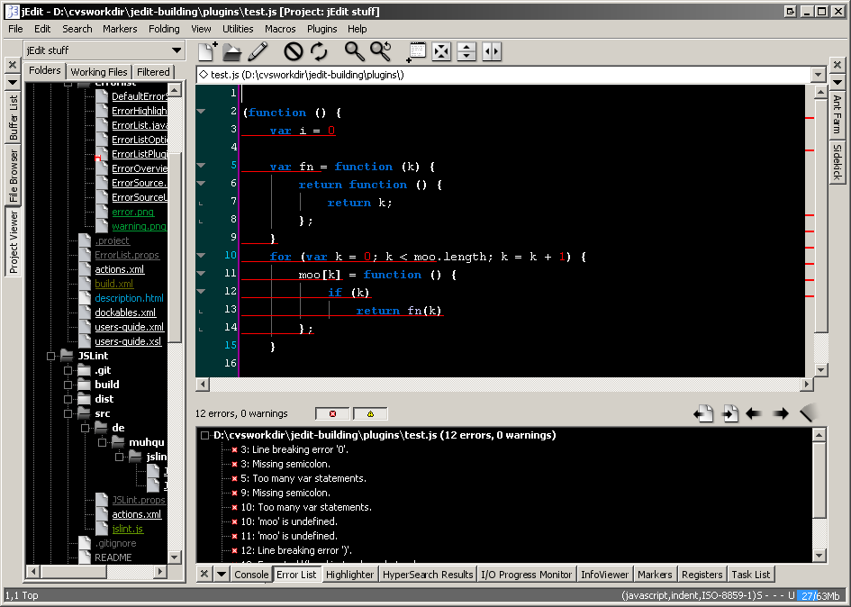

JSLint – The JavaScript Verifier – is a JavaScript source checker and validator ( www.jslint.com ). This PlugIn actually runs jslint.js within Rhino.
It supports all major JSLint options and lets you decide to Run JSLint on buffer save and/or on buffer switch.
Big Thanks to Douglas Crockford for giving us JSLint! …and of course for inventing JSON.
Thanks to Jiger Patel for the jEdit plugin ‘CodeLint’ which I used as a basis for this plugin.
© 2008 – Mathias Leppich ( muhqu.de )
This jEdit plugin is now available thru the build-in Plugin Manager.
See its page on jEdits Plugin Central site.
Menu Bar -> Plugins -> Plugin Options ... -> JSLint

